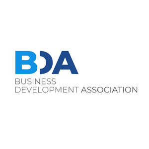

Trade Mark Journal No.2025/016 18 April 2025
UK00004181365 29 March 2025 (35,41,42)

- Class 35
- Business networking; Business networking services; Online business networking services; Business consulting services; Administration of membership schemes; Administration of a discount program for enabling participants to obtain discounts on goods and services through use of a discount membership card; Promoting the goods and services of others by arranging for sponsors to affiliate their goods and services with sports competitions; Sales promotion through customer loyalty programs.
- Class 41
- Education; Education and training; Education services; Education, teaching and training; Academy services (Education -); Education academy services; Training and education services; Education and training services; Education examination; Educational services for providing courses of education; Providing of education; Online education services; Education and training consultancy; Training; Training or education services in the field of life coaching; Academy education services; Providing courses of training; Consultancy services relating to the education and training of management and of personnel; Training of teachers; Training courses (Provision of -); Providing of training, teaching and tuition; Training consultancy; Academies [education]; Organisation of training courses; Consultancy services relating to the development of training courses; Accreditation of professional competency; Accreditation [certifying] of educational achievement; Accreditation of educational services; Certification in relation to educational awards; Educational certification services, namely, providing training and educational examination; Training courses; Preparation of educational courses and examinations; Development of educational courses and examinations; Courses (Training -) relating to accountancy; Courses (Training -) relating to management; Provision of training and education; Management training consultancy services; Courses (Training -) relating to customer services; Educational and training services; Training services; Providing training and educational examination for certification purposes; Awarding of educational certificates; Review courses for state examinations; Organisation of conferences relating to vocational training; Academic examination services; Organisation of examinations to grade level of achievement; Issuing of educational awards; Vocational training courses (Provision of -); Vocational education and training services; University education services; Organisation of training courses relating to design; Educational assessment services; Organisation of continuing educational seminars; Publication of educational and training guides; Organisation of training; Postgraduate training courses relating to management studies; Provision of education and training; Provision of training courses; Setting of training standards; Provision of educational examinations; Provision of educational examination facilities; Organisation of training seminars; Education services relating to vocational training; Arrangement of training courses in teaching institutes; Provision of education courses; Courses (Training -) relating to insurance; Organisation of conferences relating to education; Provision of educational examinations and tests; Organisation of conferences relating to training; Providing continuing nursing education courses; Education and training services in relation to business management; Vocational training services; Organisation of correspondence courses; Educational examination services; Examination services (Educational -); Postgraduate training courses relating to engineering technology; Providing continuing medical education courses; Organization of education competitions; Educational services provided by institutes of higher education; Education services in the nature of courses at the university level; Organisation of seminars relating to education; Vocational training; Educational courses (Provision of -); Consultancy services relating to the analysis of training requirements; Organisation of educational seminars; Career advisory services (education or training advice); Providing continuing dental education courses; Educational and training programs in the field of risk management; Education academy services for teaching construction drafting; Guidance (Vocational -) [education or training advice]; Vocational guidance [education or training advice]; Conducting of educational courses in business management; Organisation of symposia relating to training; Education and training services in the field of occupational health and safety; Training courses relating to system analysis; Teaching academy services; Specialisation courses for oncological doctors; Provision of training services for industry; Education services relating to the veterinary profession; Educational institute services; Organisation of seminars relating to training; Provision of information and preparation of progress reports relating to education and training; Education advisory services relating to accountancy; Professional consultancy relating to education; Organisation of symposia relating to education; Conducting of courses relating to administrative training; Provision of online training; Training and further training consultancy; Providing continuing legal education courses; Educational services provided by institutes of further education; School courses relating to examination preparation; Educational courses relating to insurance; Education services relating to business training; Residential training courses; Educational seminars relating to investigative procedures.
- Class 42
- Certification of educational services; Testing services for the certification of quality or standards; Certification [quality control]; Testing, analysis and evaluation of the services of others for the purpose of certification; Process monitoring for quality assurance.
Business Development Academy Limited